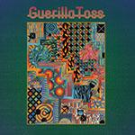

Music Reviews
-
Exploded View Obey
The second LP from Exploded View, Obey is a multifaceted and emotionally turbulent exploration of sound and structure that merges a range of musical styles into its well-unified tone and context.
Sean Caldwell reviews... -

Joyce Manor Million Dollars to Kill Me
On their fifth album, the Torrance, California four-piece take ownership of their airtight guitar pop, more in pursuit of honing a musical approach that suits them rather than searching for some fictitious denomination of aging gracefully.
Juan Edgardo Rodríguez reviews... -

Guerilla Toss Twisted Crystal
For Twisted Crystal, Guerilla Toss polish the edges a bit and continue to refine their blend of dance pop and art rock, resulting in an interesting fusion of styles that they manage to own.
Sean Caldwell reviews... -

The Goon Sax We're Not Talking
In We're Not Talking, the Brisbane trio furthers their modest songcraft by sprucing up their tuneful sorrow.
Juan Edgardo Rodríguez reviews... -
Alice in Chains Rainier Fog
The current iteration of Alice In Chains has produced a great rock record that, though it isn't an outright classic, proves they are more than a footnote in rock history.
Tom Parmiter reviews... -
Nicki Minaj Queen
Quoth Minaj: "It's the last time you're gonna see a bad guy do the rap game like me." Is it though?
Luiza Lodder reviews... -

Basement Revolver Heavy Eyes
The Hamilton, Ontario's full-length debut surges through vocalist Chrisy Hurn, an unconcealed narrator whose broken confessions anchor the mercurial urgency of their muscular indie rock.
Juan Edgardo Rodríguez reviews... -
Interpol Marauder
All the signposts to Interpol's success are highlighted on their sixth studio album, Marauder.
Tom Parmiter reviews... -
Mitski Be the Cowboy
Mitski embraces the cowboy mythos to magnificently create characters filled with desire and lonliness. It's through these songs and people that she reveals herself.
Joe Marvilli finds the cowboy... -
Uniform The Long Walk
Uniform's third effort sounds grubby and decrepit from beginning to end - and every corridor they walk past is just as dark - as if they're opposing any moral dualities that may peak into their violent outbursts.
Juan Edgardo Rodríguez reviews...